Divide and Conquer Algorithms
Recurrence Relation
The standard recurrence relation for divide and conquer algorithms is
represented as
T(n) = a T(n/b) +
f(n)
where a problem of size n is
divided into b
instances each of size n/b with a of them
needing to be solved. The function f(n)
represents the time spent dividing the problem into smaller problems
and combining their solutions.
Master Theorem
If f(n) ∈ Θ (n^d) with d >= 0, then the following holds:
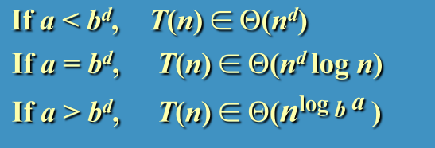
General Idea
Divide a problem into several smaller instances of the same problem.
Solve each of the smaller problems (typically recursively), and combine
solutions of the smaller problems to obtain a solution to the original
problem.
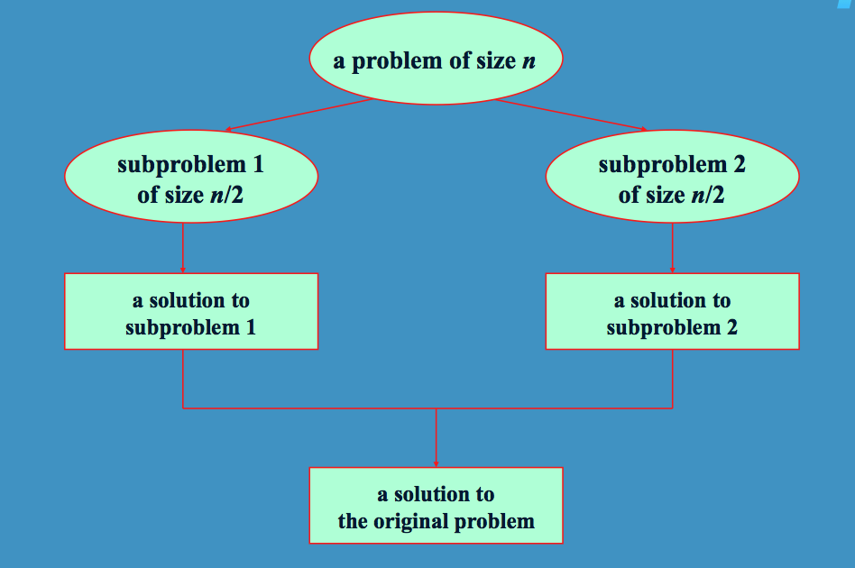
Examples
- Merge Sort
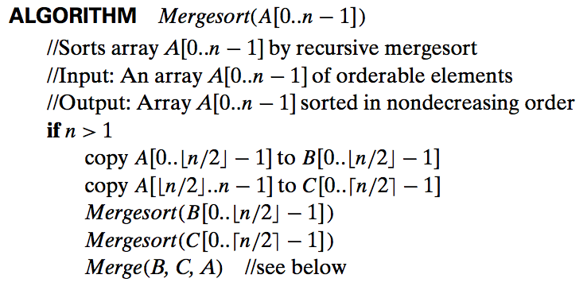
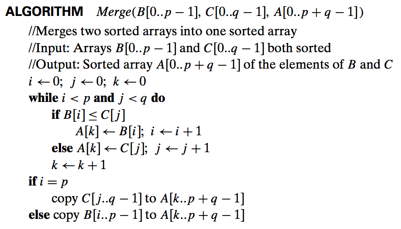
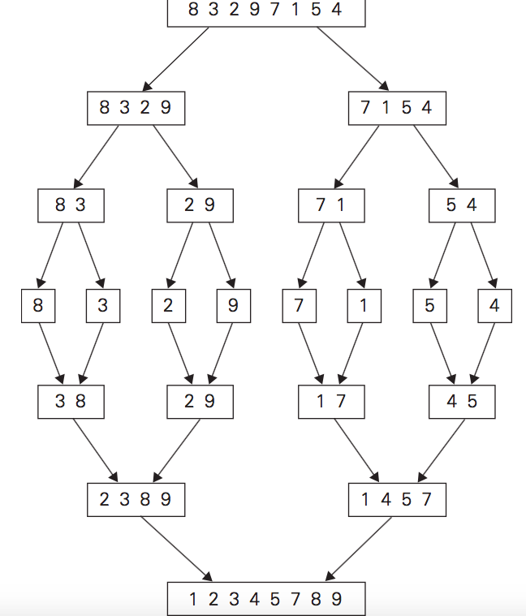
- Quick Sort
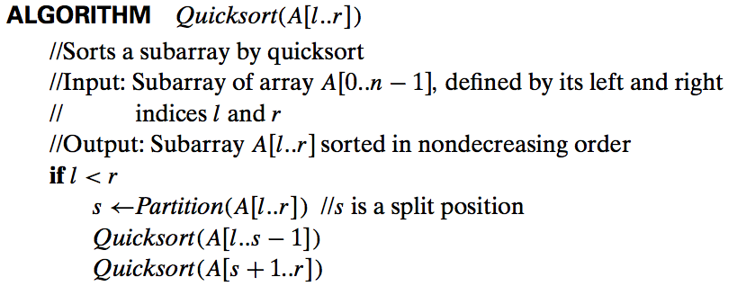
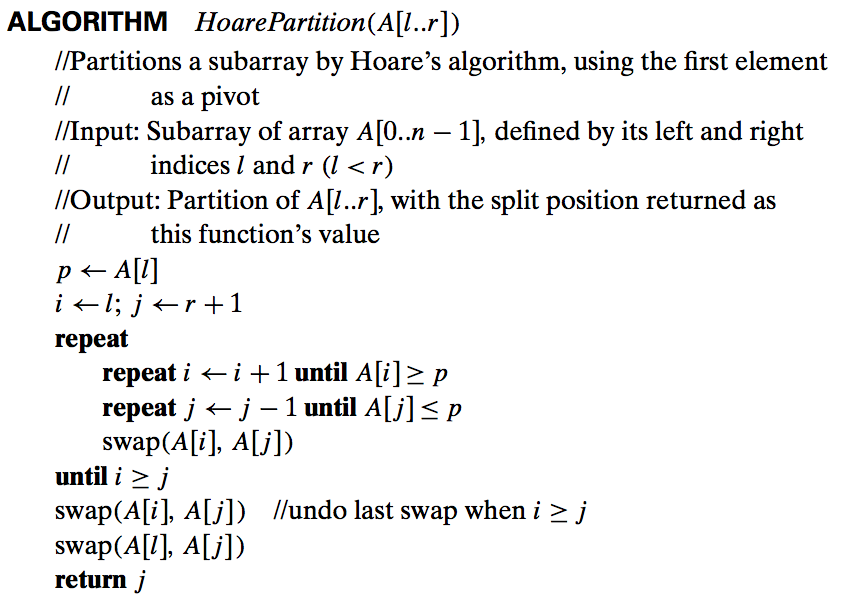
- Finding Minimum and Maximum
int max (List L)
{
if (L.size ==
1)
return L;
else {
left = max(left side of L);
right = max(right side of L);
if (left > right)
return left;
else
return right;
}
}
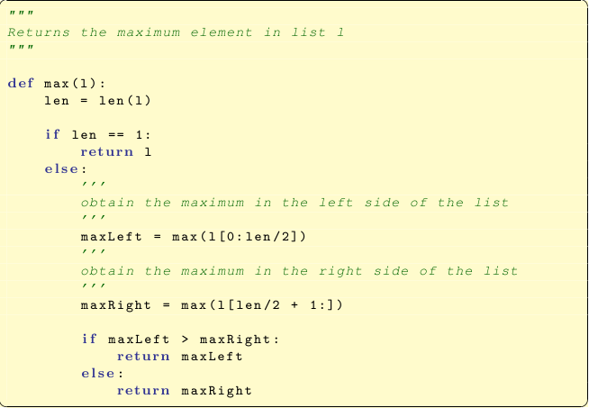
- Conversion of Bases
<< in class example converting a
binary number to its decimal equivalent. >>
The Quick and Merge sorts can be represented with the following
recurrence relation:
T(n) = 2T(n/2) + n
where T1 = 0
Further Examples
- Binary Search
This can be modeled with the recurrence:
T(n) = T(n/2) + 1 where
C1 = 1
Divide and Conquer - Closest Pair
Recall the brute-force solution to this problem?
Divide and Conquer:
- Sort all n
points in ascending order by x-coordinates.
- Divide points into two subsets (left and right) of size n/2.
- Recursively find closest pair for each subset:
- Let d1 = closest
pair in left subset. Let d2 = closest
pair in right subset.
- Let d = min(d1,
d2) [This may not be the closest pair because a closer pair may
straddle the dividing line.]
- Let C1
and C2 be
the subsets of points on the left and right portions of the strip.
- Examine points that are between left and right subsets, but are < d apart.
(i.e. for every point P(x,y) in C1, inspect
points in C2
that are closer to P
than d.)
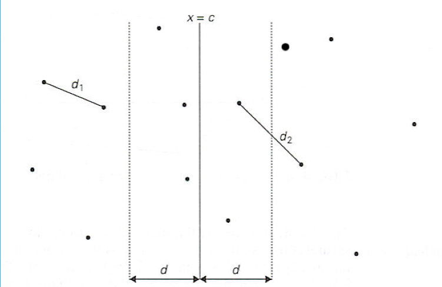
Here is the code:
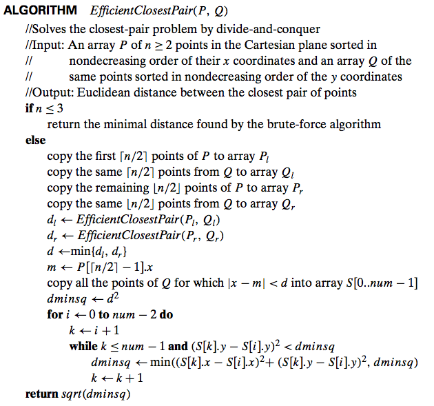
We only need to check points that are
<= 2d
apart.
In fact, there are only 6
possible points we need to check because any pair of points in C2 is at least
distance d
apart from each other.
Merge step can be linear if we keep lists of points sorted also in
y-axis.
Tn = 2T(n/2) + n ∈ Θ (n
lg n)
Divide
and
Conquer
-
Convex
Hull
"Quickhull" algorithm for its
similarity to the Quicksort.
Assume n points are sorted in increasing order of their X coordinates.
Left-most and right-most (P1 and P2) points are on the hull.
Intuitively, divide the points in half - create an upper hull and lower hull.
*** We also identify a point P3 as being to left of a line
between points P1 and P2 if the line extending from P1 -> P2 ->
P3 forms a counter-clockwise cycle.
Algorithmically: (*** There are
several different ways this can be implemented algorithmically using
divide and conquer.)
Calculate Upper Hull (obviously
works similarly for lower half)
CreateUpperHull(line, set)
{
0. If length(set) == 0 return
1. Identify Pmax - the point that is the farthest
from the line
2. Create new line line1 P1 to Pmax.
3. Identify set1 - all points that are to the left
of line1
4. Recursive call to CreateUpperHull(line1, set1)
5. Add Pmax to the hull
6. Create new line line2 - PMax to P2
7. Identify set2 - all points that are to the left
of line2
8. Recursive call to CreateUpperHull(line2, set2)
}
Graphically
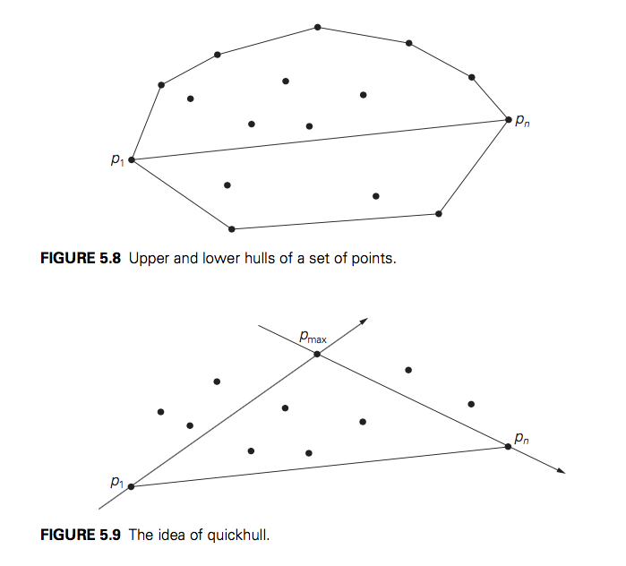
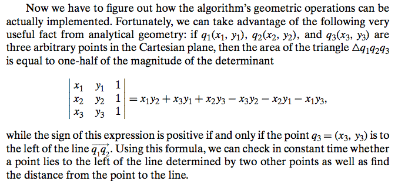
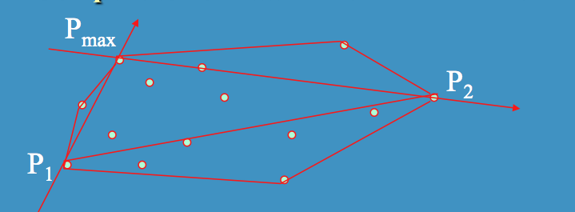
Analysis
Worst case is Θ(n^2) (This occurs when all points are on the convex
hull.)
Average case is Θ(n) (This occurs when most points are not on the
convex hull.)